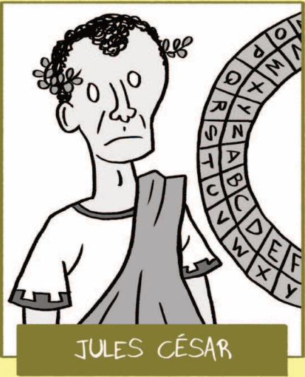

2 figures éminentes de la Cybersécurité
La cybersécurité est un domaine essentiel de l’informatique visant à protéger les systèmes, réseaux et données contre les cyberattaques et les menaces. Elle comprend des pratiques telles que le chiffrement, l’authentification, et la gestion des risques pour assurer la confidentialité, l’intégrité et la disponibilité des informations dans des environnements numériques de plus en plus exposés.
Question: Quel mot décrit le processus de protéger les informations contre les accès non autorisés ?